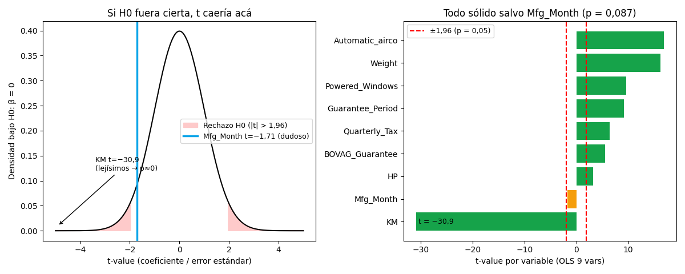

Bloque D · Regresión lineal, selección y regularización · Lección 0042 · mié 2 sep
Hipótesis, p-valor y t: ¿este coeficiente habla en serio?
Win de hoy: leer la columna P>|t| del summary como un fiscal:
KM (t = −30,9, p ≈ 0) es culpable de mover el precio sin dudas;
Mfg_Month (t = −1,71, p = 0,087) queda libre por falta de pruebas.
1 · H0 vs H1: el juicio a cada coeficiente
Una hipótesis es una idea a prueba. Para cada coeficiente del OLS (lección 0024) se abre un juicio:
- H0 (nula): «esta variable no mueve el precio» (β = 0). Se la presume inocente.
- H1 (alternativa): «sí lo mueve» (β ≠ 0). Necesita pruebas.
Ejemplo de clase: H0 «la edad no guarda relación con el aumento de peso» vs H1 «sí guarda relación».
Y el ejemplo histórico del apunte: H0 «el mundo es plano» —la idea que todos daban por cierta— vs
H1 «el mundo es redondo»: Copérnico y los navegantes juntaron pruebas hasta voltear la nula.
La definición textual: la H0 es la que el investigador trata de refutar, rechazar o anular
(el “no pasa nada” por defecto); la H1 es la que realmente cree que causa el fenómeno
y necesita pruebas para imponerse.
El jurado es el t-value: t = coeficiente / error estándar = «señal dividida ruido».
t cerca de 0 = puro ruido, absuelve; t lejísimos de 0 = señal, condena.
2 · p < 0,05: la regla del 5 %
El p-valor traduce t a probabilidad: «si H0 fuera cierta, ¿qué tan raro sería ver esto?». La convención (la del pizarrón): p < 0,05 → se rechaza H0 (efecto significativo); p ≥ 0,05 → no hay pruebas suficientes. Con muestras grandes, p = 0,05 equivale a |t| ≈ 1,96.

Lectura: (1) 8 de 9 variables condenadas (p ≈ 0): efectos sólidos. (2) Mfg_Month p = 0,087: con 8,7 % de chances de ser azar, no cruza el 5 % — dudoso, como anticipó 0024. (3) «No significativo» ≠ «efecto cero»: significa «sin pruebas suficientes». Tal vez el mes sí influye un poco y la muestra no alcanza.
Regenerar la figura (mismo resultado versionado en assets/img/toyota/):
python scripts/make_figures.py --only inferencia-pvalor-t3 · Tabla del juicio (OLS 9 vars del reference)
Cómo se arma cada fila (lectura de clase): t = coef / std err (señal sobre ruido) y
p chico = se rechaza H0. La fila const es el intercepto: el precio base con todo en cero.
| Variable | Coef | std err | t | p | Veredicto |
|---|---|---|---|---|---|
| const | −15.737,61 | 1.442,48 | −10,91 | ≈ 0 | Base distinta de 0 (extrapolación) |
| KM | −0,0456 | 0,0015 | −30,90 | ≈ 0 | Sólido: cada km resta de verdad |
| Weight | +23,46 | 1,44 | +16,26 | ≈ 0 | Sólido |
| Automatic_airco | +4.209,79 | 249,08 | +16,90 | ≈ 0 | Sólido (y caro) |
| HP | +12,66 | 3,86 | +3,28 | 0,0011 | Sólido pero justo |
| Mfg_Month | −25,05 | 14,63 | −1,71 | 0,087 | Dudoso: no cruza el 5 % |
Ojo de analista: HP es significativo (p = 0,001) pero su t (3,28) es modesto al lado de KM (−30,9): significancia ≠ importancia. Y el dropout de Mfg_Month debe ser consciente (ver lección 0019): p alto + sinsentido de negocio (¿el mes fabrica precio?) = candidata a salir, no salida automática.
4 · El juicio en 8 líneas (reproducí la tabla)
import pandas as pd, numpy as np, statsmodels.api as sm
df = pd.read_csv("../ToyotaCorolla.csv")
dl = df[df.select_dtypes(include=[np.number]).columns].copy()
basura = ["Id","Met_Color","Airbag_1","Airbag_2","Gears","Mistlamps","Radio_cassette",
"Power_Steering","Backseat_Divider","Central_Lock","Radio","cc","Doors","Cilynders",
"CD_Player","Airco","Automatic","Tow_Bar","Boardcomputer","Metallic_Rim","Mfg_Year",
"Mfr_Guarantee","Cylinders","ABS","Sport_Model","Age_08_04"]
dl = dl.drop(columns=[c for c in basura if c in dl.columns]).fillna(dl.mean())
m = sm.OLS(dl["Price"], sm.add_constant(dl.drop(columns=["Price"]))).fit()
print(pd.DataFrame({"t": m.tvalues, "p": m.pvalues}).round(4).to_string())Tu turno: sacá Mfg_Month del modelo y compará R² y AIC: si casi no se mueven,
confirmás que aportaba ruido, no señal.
5 · Quiz (auto-chequeo inmediato)
6 · Fuente primaria y cierre
Para profundizar (1 fuente): Diez, Barr & Çetinkaya-Rundel, OpenIntro Statistics — cap. 4–5 (test de hipótesis, p-valor). Más contexto en RESOURCES.
Orden Bloque D: con el juicio a cada coeficiente ya podés leer cualquier tabla t/p. Siguiente en el bloque: 0057 · Errores tipo I y II: los dos modos de fallar el juicio.